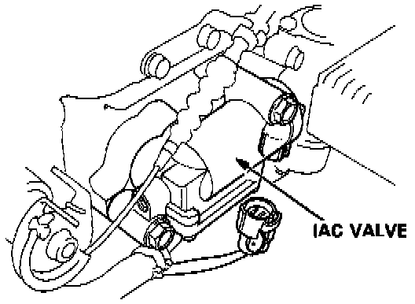
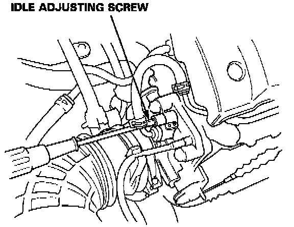

Idle Speed: Adjustments
PROCEDURENOTE: (Canada) Pull the parking brake lever up. Start the engine, then check that the headlights are off.
1. Start the engine and warm it up to normal operating temperature (the radiator fan comes on).
2. Connect a tachometer.

3. Disconnect the 2P connector from the idle air control valve.
4. Start the engine with the accelerator pedal slightly depressed. Stabilize the rpm at 1000, then slowly release the pedal until the engine idles.
5. Check idling in no-load conditions: headlights, blower fan, rear defogger, cooling fan, and air conditioner are not operating.
Idle speed should be:
M/T 550 +/- 50 rpm
A/T 550 +/- 50 rpm (in [N] or [P] position)

Adjust the idle speed, if necessary, by turning the idle adjusting screw.
6. Turn the ignition switch OFF.
7. Reconnect the 2P connector on the idle air control valve, then remove BACK UP (10 A) fuse in the under-hood fuse/relay box for 10 seconds to reset the engine control module.
8. Restart and idle the engine with no-load conditions for one minute, then check the idle speed.
NOTE: (Canada) Pull the parking brake lever up. Start the engine, then check that the headlights are off.
Idle speed should be:
M/T 700 +/- 50 rpm
A/T 700 +/- 50 rpm (in [N] or [P] position)
9. Idle the engine for one minute with headlights (Hi) and rear defogger ON and check the idle speed.
Idle speed should be:
M/T 770 +/- 50 rpm
A/T 770 +/- 50 rpm (in [N] or [P] position)
10. Turn the headlights and rear defogger off. Idle the engine for one minute with blower fan switch at HI and air conditioner on, then check the idle speed.
Idle speed should be:
M/T 770 +/- 50 rpm
A/T 770 +/- 50 rpm (in [N] or [P] position)
NOTE: If the idle speed is not within specification, see Idle Control system DIAGNOSIS BY SYMPTOM.